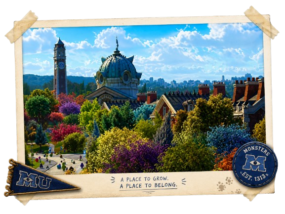
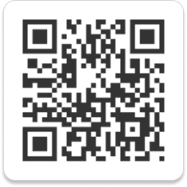
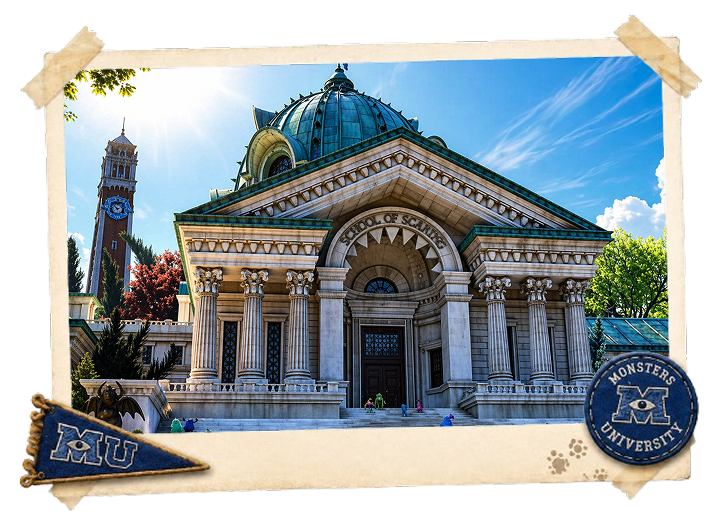
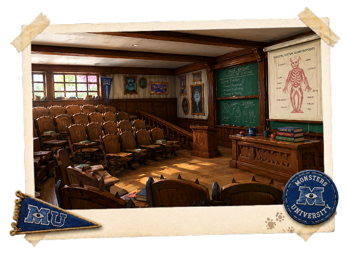
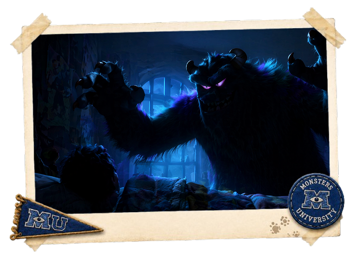
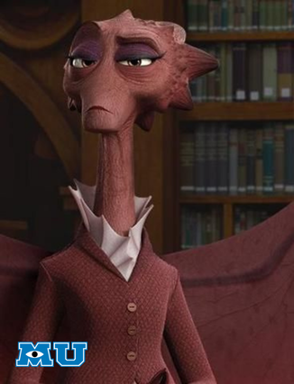
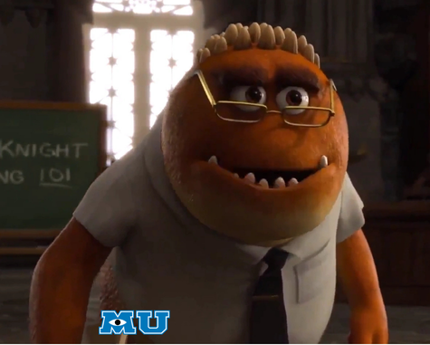
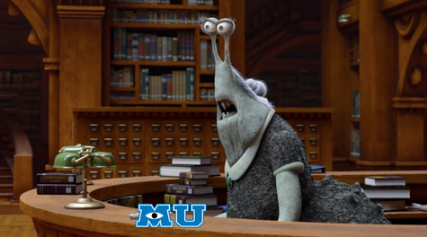

ProjectAR - AR & interaction design
Monsters University: School of Scaring
Een interactieve website met een AR companion die de campus, docenten en aanmeldflow tot leven brengt. De basis blijft bruikbaar als gewone website; de AR-laag voegt extra beleving, karakter en speelse spanning toe.

De opdracht
Maak AR nuttig binnen een bestaande wereld
De opdracht was om een website met een AR-component te ontwerpen en uit te werken. Ik koos zelf voor een schoolsite binnen het Monsters University-universum, omdat de School of Scaring al vraagt om beleving: vakken, docenten, campuslocaties en aanmelding moesten voelen alsof ze echt bij die wereld horen.
De belangrijkste ontwerpkeuze was om AR niet als los trucje te gebruiken. De website geeft de informatie; de companion opent extra lagen wanneer de gebruiker een QR-code of afbeelding scant.

Onderzoek & denkproces
Van thema naar bruikbare AR-laag
In de ontwerpfase lag de nadruk op richting kiezen: doelgroep, context, benchmarkanalyse, requirements, user flow en wireframes. In de implementatiefase is dat doorontwikkeld naar high-fidelity schermen, micro-interacties, technische realisatie en de volledige companion.
Thema & doelgroep
De School of Scaring moest herkenbaar, speels en schoolachtig voelen voor aankomende studenten, zonder te druk of onduidelijk te worden.
Benchmark & concept
AR-voorbeelden zoals image tracking en ruimtelijke 3D ervaringen hielpen bepalen wanneer een scan echt iets toevoegt.
Wireflow & prototype
De gewone website kreeg eerst structuur: home, vakken, docenten, campus en apply. Daarna werd per onderdeel gekeken welke AR-laag logisch paste.
Testen & itereren
Feedback leidde tot meer sfeer, duidelijkere interacties en een betere balans tussen thematische spanning en toegankelijkheid.
Website prototype
Een complete schoolomgeving als basis
De website bestaat uit pagina's voor vakken, docenten, campus en inschrijven. De AR companion is gekoppeld aan die inhoud, zodat elke scan logisch voelt binnen de route van de gebruiker.



AR companion
Van scan naar 3D ervaring
Scan een target
MindAR herkent afbeeldingen zoals docentportretten, campusbeelden of thematische objecten.
Toon passende content
Docenten krijgen AR teacher cards met naam, vakgebied, type docent, scare level en korte quote.
Open een ruimte
Sommige scans sturen door naar A-Frame scenes, zoals de 3D campus, main hall, library of entry exam.
Technische uitwerking
Gebouwd als statisch prototype met AR onderdelen
De gewone website is opgebouwd in HTML en CSS. Voor de AR-laag gebruikte ik A-Frame voor 3D scenes, MindAR voor image tracking en JavaScript voor interacties, redirects, teacher-card rotatie en de Scare Theory Exam logica.
- Image targets met targetIndex voor gekoppelde content.
- GLB-modellen voor monsters, gebouwen, meubels en schoolobjecten.
- Vaste companion UI met notice box, border, exit-knoppen en feedback states.
- 3D Scare Theory Exam met vragen, voortgang, sfeerfeedback en eindroute naar apply.



Ontwerpkeuze
Spannend, maar niet ontoegankelijk
In de feedback kwam naar voren dat de School of Scaring meer enge elementen mocht krijgen. Ik heb dat vertaald naar sfeer, micro-interacties, flicker-effecten en een exam-moment, maar bewust niet naar een constant intense ervaring.
Monsters University blijft speels en toegankelijk. Daarom is de AR companion optioneel, zijn de websitepagina's nog steeds rustig leesbaar en blijft de basisinformatie beschikbaar zonder camera of sterke telefoon.
Reflectie op het project
De belangrijkste afweging
De kern van mijn reflectie was de balans tussen beleving en verantwoordelijkheid. De School of Scaring vraagt om een spannende sfeer, maar het bronmateriaal blijft licht, grappig en toegankelijk. Daarom heb ik gekozen voor spanning als laag, niet als drempel.
De AR companion is optioneel en verdiepend: gebruikers kunnen de site blijven gebruiken zonder camera, zonder sterke telefoon en zonder de intensere AR momenten. Voor een volgende versie zou ik vooral testen op mobiel gebruik, duidelijke scaninstructies, performance van 3D assets en toegankelijkheid van effecten zoals beweging en flikkering.
Eindresultaat
Een portfolio-case met meer dan alleen screenshots
Het eindproduct laat zien hoe een informatieve site en AR elkaar kunnen versterken: de website geeft structuur, de companion maakt de wereld tastbaar, en de Scare Theory Exam maakt de aanmelding onderdeel van het verhaal.